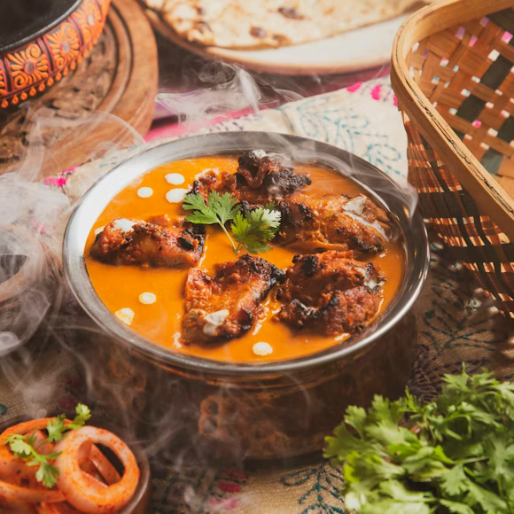

Go to homepage
Butter Chicken Recipe

Description
Butter chicken, also known as Murgh Makhani, is a popular Indian dish made with marinated chicken cooked in a creamy, spiced tomato sauce enriched with butter. It is known for its rich texture and mild flavor, often served with naan or rice.
Ingredients
- 1 cup butter, divided
- 1 onion, minced
- 1 tablespoon minced garlic
- 1 (15 ounce) can tomato sauce
- 3 cups heavy cream
- 2 teaspoons salt
- 1 teaspoon cayenne pepper
- 1 teaspoon garam masala
- 1 ½ pounds skinless, boneless chicken breast, cut into bite-sized chunks
- 2 tablespoons vegetable oil
- 2 tablespoons tandoori masala
Steps
- 1 cup butter, divided
- 1 onion, minced
- 1 tablespoon minced garlic
- 1 (15 ounce) can tomato sauce
- 3 cups heavy cream
- 2 teaspoons salt
- 1 teaspoon cayenne pepper
- 1 teaspoon garam masala
- 1 ½ pounds skinless, boneless chicken breast, cut into bite-sized chunks
- 2 tablespoons vegetable oil
- 2 tablespoons tandoori masala